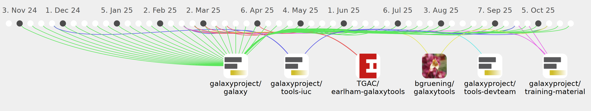

nsoranzo

Commits all-time: 9079
Commits last year: 483

(397)
- 318aa57
- 223f058
- dd80698
- 0f1bfb6
- b22cbb2
- 7b94bb0
- af8d433
- 2bf7c7e
- 91c2fbe
- 0accf3f
- cf1c824
- 7ce76af
- 994b427
- 18312cf
- ca9bf29
- e394205
- 0aca5fd
- b4bd2ee
- 4b5f8ea
- cca08b7
- cd53b3d
- 3f743ea
- 92e8f50
- 60c080b
- ea1f245
- caa4995
- 4584e05
- 9477c77
- 1c3fd3a
- 49fa860
- 5467231
- bddddd2
- 3eb2ba8
- 31f4391
- c5d214d
- d26dae4
- 6d15548
- 5c686c6
- 26d3783
- 7861ecc
- 99fd860
- 6c69897
- cc18d87
- 679083d
- 05b9467
- 5fe5b53
- 4421f43
- 8edced9
- 27b9293
- 4607d88
- b7591a0
- 2a76b76
- 19bbf7e
- 00ae949
- 6f77862
- 3bb8444
- 1032fa4
- 6f607c4
- 5d9c965
- fb61394
- 302acfb
- 8f0e11b
- 18feca9
- 1c8fbbb
- 402c648
- b10c957
- cd11d22
- 109f4c8
- 68db575
- a7dc613
- cc1469d
- 171b93e
- 804b1f6
- 5f23f7f
- f763ad1
- 53f9e21
- c1fe450
- 4536fc6
- 79531bf
- 47e546c
- 3e51ac5
- 5c245f9
- e9861aa
- 8758667
- a47c0df
- 3a7feba
- 3fe4e31
- 1ab6a7b
- 517a73d
- 5d8a084
- d9a8320
- 848f15f
- 0e60750
- 4010f5d
- 3f18c3a
- 39ee45b
- d089171
- 1be32c1
- 3fd2dd9
- 715ec99
- c04008b
- a34e5b4
- 91603d0
- dbbdf6c
- 1a03e32
- b9a2739
- 5e54fbc
- e3279f1
- bb87560
- 83ff06b
- 61075f1
- 6e2e64c
- 1081e8d
- 7d1bb62
- d0dc2ad
- 703857e
- 8e9d05f
- e3c7485
- 74a17ec
- 7160c5b
- 2169003
- e494759
- c929ab5
- ee3b969
- 9bd2a32
- 010bbdd
- 33f63b6
- 3bff113
- 0554554
- 761747a
- 1984ad7
- 6eaf865
- bc0acd7
- 2c41fef
- 11e53a9
- 162fe28
- 252a7fd
- 90fad91
- e1d2815
- 1155081
- 2e66316
- 2714cea
- b0fd7e6
- 0b2e2f4
- e3333ba
- a7287f4
- 9007d86
- 2c822cd
- eabe164
- 8234c78
- f4b5e74
- 8b8d979
- fdf931b
- 0764567
- 89cc1a4
- c967926
- 36ef67b
- cc26ab7
- 4b1558b
- 0940f20
- 1504579
- c6f1dd6
- 414019d
- 1cc2d6e
- 99e352a
- e8bdede
- 2293a08
- 1a721fb
- 7ebd108
- f4378a4
- d1b821a
- da7fdc8
- 0153179
- 777ec1e
- 0cc5d77
- d95f823
- b221598
- bd965fc
- 3515eba
- 1c91ce6
- 6ec1249
- 25366c5
- 4e90ba2
- f8a8541
- 5a5249b
- 7a8399c
- 88bc25a
- 191de11
- 7f89e0e
- 6240561
- 4956f20
- 50ad81c
- 41c4186
- f6adc7c
- 02179ac
- f28450c
- 21d827f
- e277706
- 90871e8
- ea3e74b
- 1452581
- 1d9d93e
- f3adeaa
- 3820795
- c16cd2d
- 429366e
- 7a65393
- 4685a28
- 7fa47d4
- a802727
- be6a0de
- dcd415a
- 8152ae8
- 5777a71
- 14988f5
- 2a73ef7
- 76b714d
- aa13a63
- 06245f4
- 0c2d349
- 4768d3d
- 922bbdc
- 0abc2f7
- eb0a33f
- bafa6de
- 26e6a17
- b0d04d2
- 12f81e9
- 857948c
- 7f569cd
- f26ba3e
- ea0e7ab
- 45f2fd9
- d6a5626
- 3aa23da
- 505b9e0
- b7bce25
- f4b246f
- 51a81b3
- 31684ca
- 0c41553
- 29c6342
- 3c890a6
- 97e771b
- a522d64
- 47acb61
- ba41eef
- f749d36
- 9a520d5
- 2f570c4
- 7d7d8d2
- aa7acb0
- 8b15bc3
- 53b7959
- 064866f
- 4071f34
- eaf525a
- 811fe66
- d1625f9
- d216ec4
- 9216f92
- 13eeda3
- 31720da
- 48436be
- 47691c8
- 0e0ca11
- 7608bf6
- 56b74fe
- a2ea3d5
- 6294074
- 156b51b
- cf7da4d
- 5b74f08
- 2e864f9
- d44e343
- 956a85b
- 9c2ce67
- 992d46a
- 0ec6c3b
- 5600065
- ed99427
- 3c41fe0
- c68f850
- ae62f12
- 6cf9d49
- f20306b
- 32dca1b
- e3f9a65
- fb9926a
- 86e45d3
- 64d9adb
- e226fb6
- b65d248
- c1683ec
- c61e1d8
- 3210592
- 4edb38c
- f50b49f
- dcf73d5
- 83e350e
- ba0bf2e
- 9188de2
- dd34c6d
- 0bfb210
- 5f740ad
- 79e24f7
- 656c06d
- 1d4f43c
- 2474452
- c0dbd81
- 426fcd1
- 42fda3a
- 78790f1
- 16e8252
- 522546c
- 388b4a5
- 7cd32cc
- c0a8854
- ba46cb4
- 05bd453
- 98e5835
- 2360970
- 0de53df
- 176382b
- cc6db9c
- ebbe492
- f823447
- e576f9f
- 2aa85b0
- fc7d1de
- adb9be7
- 3fa2368
- dcff1b1
- d6754e0
- 558c8d1
- 04e8604
- 36e004f
- c979c1c
- 2f0323f
- 5608c66
- 0944af8
- b3cb09e
- b6d37af
- a987906
- 9d59368
- cc854da
- 6cf68b1
- 394ee8c
- 6e29ab6
- b42b340
- 3dba93b
- 07228ab
- 3dd7b63
- a599d5c
- 0800c02
- eb9fde1
- 997858a
- 959f4a5
- 12dee58
- 9ccee0f
- a35561d
- cf09b27
- 57cc112
- 0259723
- ce140f3
- a360903
- 02e2b79
- 96aabd0
- c559d7f
- a467c8d
- ec810e4
- 1c211fa
- 0e90fac
- ace6cdb
- e7f2a9d
- 17003e8
- 5aded95
- 6b4af5e
- dec2bd8
- c302820
- ad97d97
- 412f6e7
- d333b43
- b15544f
- dd3b794
- 8163acc
- 7a07f87
- 03eece6
- 64d5c22
- f83577d
- b302cf1
- 97760d4
- 3314013
- 4af1121
- 1b9c134
- 31a73e5
- d0d37f5
(29)
(26)
(13)
(12)
(3)
(3)